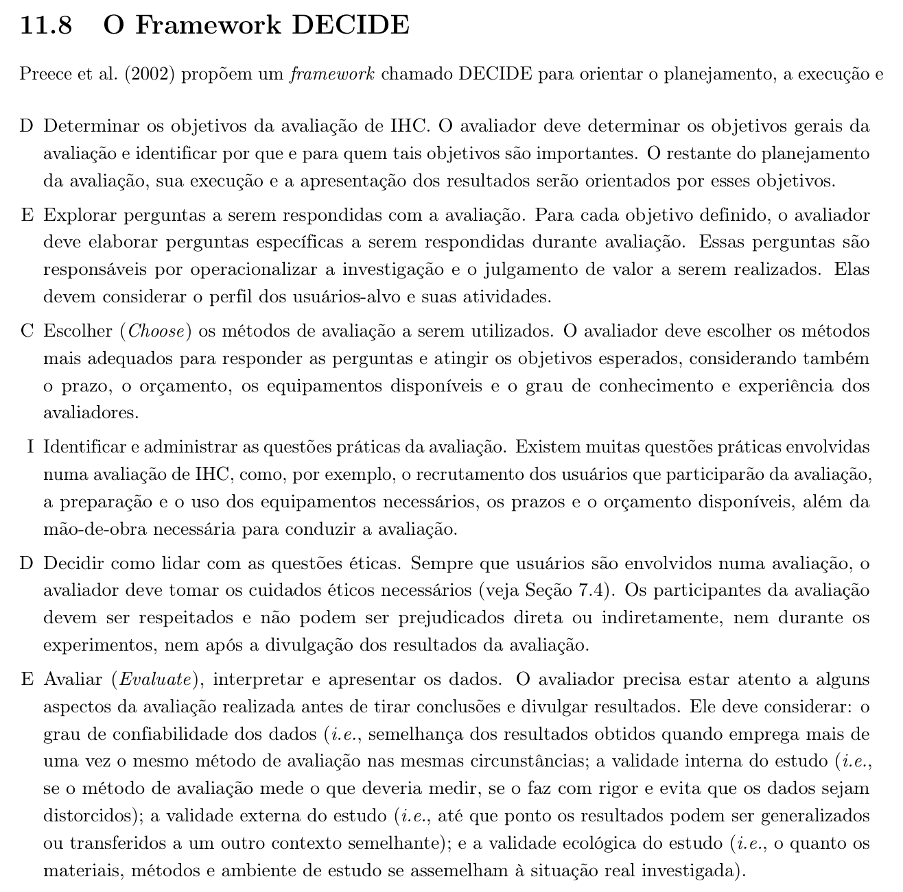
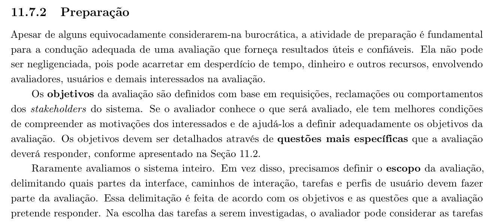

Tabela de Contribuição
| Membro | Contribuição |
|---|---|
| Arthur Sismene Carvalho | Redação do planejamento, definição do escopo e dos objetivos, elaboração do roteiro de inspeção e do roteiro de entrevista, condução da entrevista com o USR-12 e publicação desta página no GitHub Pages. |
| Daniel da Silva Batista | Revisão da fundamentação teórica, recrutamento dos participantes e condução da entrevista com o USR-10. |
| Leonardo da Silva Lopes Júnior | Preparação do material de apoio e condução da entrevista com o USR-13. |
| Pedro Rocha Ferreira Lima | Revisão técnica e condução da entrevista com o USR-11. |
| Claude (Anthropic) | Auxílio na estruturação textual, extração dos recortes bibliográficos e diagramação em Markdown (conforme Política de Uso de IA). |
Fonte: Arthur Sismene Carvalho (2026).
Planejamento da Avaliação do Storyboard
1. Introdução
Este documento planeja a avaliação dos storyboards produzidos para o reprojeto do PCI Concursos. Ele define o que será avaliado, com que objetivo, por qual método, com quais participantes, em que prazo e sob quais cuidados éticos. O documento trata apenas do planejamento: os resultados obtidos serão registrados em página própria, cuja estrutura está definida no Planejamento do Relato dos Resultados.
O storyboard é um protótipo de baixa-fidelidade, produzido cedo no processo justamente para ser barato de descartar. Avaliá-lo antes de qualquer investimento em protótipo de média ou alta fidelidade é o que torna essa economia real: um passo errado descoberto aqui custa um desenho; descoberto depois, custa uma tela implementada.
2. Metodologia
O planejamento segue o framework DECIDE, proposto por Preece et al. (2002) e apresentado por Barbosa et al. (2021) na Seção 11.8. Cada letra corresponde a uma atividade do planejamento, e as atividades são interligadas e executadas iterativamente: a alteração de uma delas afeta as demais. A Tabela 1 apresenta as seis atividades.
Tabela 1: Atividades do Framework DECIDE
| Letra | Atividade |
|---|---|
| D | Determinar os objetivos da avaliação de IHC |
| E | Explorar perguntas a serem respondidas com a avaliação |
| C | Escolher (Choose) os métodos de avaliação a serem utilizados |
| I | Identificar e administrar as questões práticas da avaliação |
| D | Decidir como lidar com as questões éticas |
| E | Avaliar (Evaluate), interpretar e apresentar os dados |
Fonte: BARBOSA et al. (2021, p. 303–304).
A Figura 1 reproduz o trecho da literatura (Seção 11.8, p. 303–304) que apresenta o framework e descreve as seis atividades que o compõem.
Figura 1: Referência Bibliográfica — O Framework DECIDE

Fonte: BARBOSA et al. (2021, p. 303–304).
3. D — Determinar os Objetivos da Avaliação
Objetivo geral: verificar se os storyboards representam corretamente as tarefas que os concurseiros realizam no PCI Concursos, antes que essas representações sejam usadas como base para a prototipação em papel.
Objetivos específicos:
- Verificar a conformidade dos storyboards com os critérios de construção desse artefato, descritos por Preece, Rogers e Sharp (2005) no Capítulo 8.
- Identificar divergências entre a sequência de passos retratada e a sequência que os usuários de fato executam.
- Coletar, junto aos usuários, propostas de alteração nos storyboards antes do avanço para o próximo nível de fidelidade.
Para quem esses objetivos importam: para a própria equipe, que usará os storyboards validados como entrada da prototipação em papel; e para os usuários do portal, cujas tarefas reais são o critério último de correção do artefato.
4. E — Explorar as Perguntas a Serem Respondidas
As perguntas da Tabela 2 operacionalizam os objetivos da seção anterior. Elas consideram o perfil de usuário definido pelo grupo — o Perfil 1: Candidato/Concurseiro, de 18 a 55 anos, com acesso predominantemente por smartphone.
Tabela 2: Perguntas da Avaliação
| ID | Pergunta | Objetivo relacionado |
|---|---|---|
| PA-01 | Os storyboards atendem aos critérios de construção desse tipo de artefato — sequência de quadros, legenda por quadro, símbolos consistentes e identificação da tarefa? | 1 |
| PA-02 | A ordem dos quadros corresponde à ordem em que o usuário realiza a tarefa no portal? | 2 |
| PA-03 | Falta ou sobra algum passo em relação ao que o usuário efetivamente faz? | 2 |
| PA-04 | A situação retratada é reconhecida pelo usuário como realista em relação ao seu dia a dia de estudo? | 2 |
| PA-05 | Que alterações os usuários propõem, e quais delas devem ser incorporadas antes da prototipação em papel? | 3 |
Fonte: Arthur Sismene Carvalho (2026).
5. C — Escolher os Métodos de Avaliação
A avaliação é conduzida em duas etapas encadeadas, porque as perguntas da Tabela 2 não são todas do mesmo tipo: PA-01 pergunta sobre conformidade com um padrão, e PA-02 a PA-05 perguntam sobre a correspondência com a experiência real de uso. Barbosa et al. (2021, p. 297) registram que, para avaliar a conformidade com um padrão, é mais adequado um método por inspeção, já que a participação dos usuários é desnecessária; e que avaliar como os usuários se apropriam da tecnologia requer um método que conte com a participação deles. A Tabela 3 apresenta os métodos selecionados.
Tabela 3: Métodos Selecionados
| Etapa | Método | Responde a | Participantes | Justificativa |
|---|---|---|---|---|
| 1ª — Inspeção | Inspeção por lista de verificação, usando a Lista de Verificação para Storyboard (20 itens) elaborada na disciplina a partir de Preece, Rogers e Sharp (2005) | PA-01 | Os quatro integrantes do grupo, em inspeção cruzada | Rápida, de baixo custo e dispensa usuários. Corrige defeitos de forma antes de ocupar o tempo dos participantes |
| 2ª — Investigação | Entrevista semiestruturada com observação, guiada por roteiro, com o storyboard apresentado ao participante | PA-02 a PA-05 | Quatro usuários externos (USR-10 a USR-13) | Permite perguntas de aprofundamento e capta caminhos que a equipe não previu |
Fonte: Arthur Sismene Carvalho (2026).
A ordem importa: nenhum storyboard vai para a entrevista sem antes ter sido inspecionado e corrigido. Levar a um participante um artefato com um defeito que a própria equipe poderia ter detectado desperdiça a sessão e o tempo dele.
6. I — Identificar e Administrar as Questões Práticas
A Figura 2 reproduz o trecho da literatura (Seção 11.7.2, p. 298) que trata da atividade de preparação da avaliação, na qual se definem os objetivos por meio de questões específicas e se delimita o escopo do que será avaliado.
Figura 2: Referência Bibliográfica — A Atividade de Preparação da Avaliação

Fonte: BARBOSA et al. (2021, p. 298).
6.1 Escopo
Raramente se avalia o sistema inteiro: delimita-se quais partes, caminhos de interação, tarefas e perfis entram na avaliação. Aqui o escopo são quatro storyboards, um por integrante do grupo, cada um retratando uma das tarefas da versão vigente da matriz de tarefas do grupo, modeladas na Análise de Tarefas. A seleção das quatro cobre as quatro personas do projeto, uma por storyboard: assim nenhuma faixa de público fica sem representação visual, e cada integrante desenha a tarefa que ele próprio modelou. A Tabela 4 vincula cada storyboard à sua tarefa, ao cenário correspondente e à persona retratada.
Tabela 4: Storyboards no Escopo da Avaliação
| ID | Tarefa retratada | Cenário | Persona | Autor e avaliador responsável |
|---|---|---|---|---|
| SB-01 | TAR-01 — Parametrizar busca avançada multicritério e comparar editais concorrentes lado a lado | CEN-01 | PER-01 — Maria Helena dos Santos | Daniel da Silva Batista |
| SB-02 | TAR-04 — Acompanhar timeline interativa de fases do certame com simulador de prazos recursais e sincronização de calendário | CEN-04 | PER-02 — Lucas Ferreira Rocha | Pedro Rocha Ferreira Lima |
| SB-03 | TAR-05 — Simulado online interativo com feedback automático de gabarito | CEN-05 | PER-03 — Thiago Moraes Albuquerque | Arthur Sismene Carvalho |
| SB-04 | TAR-08 — Alertas inteligentes de editais por e-mail com filtros avançados | CEN-08 | PER-04 — Renata Cristina Freitas | Leonardo da Silva Lopes Júnior |
Fonte: Arthur Sismene Carvalho (2026), a partir da matriz de tarefas e da página de Cenários.
Fora do escopo: as tarefas TAR-02, TAR-03, TAR-06 e TAR-07, que não foram transformadas em storyboard nesta etapa, e qualquer avaliação da interface atual do portal — o objeto aqui é o artefato de design, não o sistema existente.
Um traço das tarefas selecionadas condiciona a avaliação: todas descrevem recursos do sistema reprojetado, e nenhuma delas existe hoje no portal na forma retratada. O storyboard não ilustra, portanto, algo que o participante já tenha vivido — ele apresenta uma proposta. O roteiro da Seção 6.8 foi escrito para essa condição.
Os quatro storyboards são desenhados a partir da versão 1.5 dos modelos de tarefa — HTA e CTT —, que já incorpora as correções apontadas pela avaliação docente. A Avaliação da Análise de Tarefas corre em paralelo e tem o relato entregue no mesmo prazo que o desta avaliação. Se ela alterar a decomposição de alguma das quatro tarefas, o storyboard correspondente é revisado antes da prototipação em papel, e a mudança é registrada no relato — o que também alimenta o item 16 da lista de verificação, que pergunta se o storyboard passou por mais de uma versão.
6.2 Recrutamento e perfil dos participantes
São quatro participantes, um por storyboard, recrutados pelos integrantes do grupo. O número é um a menos que os cinco usuários apontados como suficientes para encontrar a maioria dos problemas de interface, com boa relação custo–benefício (Nielsen, 2000, apud Barbosa et al., 2021, p. 298), e decorre do tamanho da equipe: cada integrante desenha um storyboard e conduz a sessão correspondente. A Tabela 5 apresenta os critérios de seleção.
Tabela 5: Critérios de Seleção dos Participantes
| Critério | Exigência |
|---|---|
| Perfil | Perfil 1 — Candidato/Concurseiro, conforme o Perfil de Usuário |
| Aderência à persona | Cada participante deve se aproximar da persona do storyboard que vai avaliar, conforme a Tabela 4, sobretudo em faixa etária, rotina de estudo e dispositivo de acesso |
| Faixa etária | 18 a 55 anos — o conjunto dos quatro participantes cobre as quatro personas e, com elas, toda a faixa |
| Experiência com o domínio | Ter se inscrito ou estudado para ao menos um concurso público |
| Experiência com o portal | Ter utilizado o PCI Concursos ao menos uma vez |
| Dispositivo de acesso habitual | Ao menos dois dos quatro participantes devem ser usuários predominantemente de smartphone, refletindo os 62% registrados no perfil de usuário |
| Vínculo com o avaliador | Evitar parentes, amigos próximos e colegas de turma do avaliador |
Fonte: Arthur Sismene Carvalho (2026).
Os participantes são identificados por código — USR-10 a USR-13 —, dando continuidade à numeração adotada no Perfil de Usuário e na Avaliação da Análise de Tarefas. São pessoas distintas das que participaram daquela avaliação: quem já discutiu a decomposição de uma tarefa reconheceria a mesma sequência nos desenhos, e a validação do storyboard perderia o sentido. A última linha da Tabela 5 atende à recomendação de evitar pessoas próximas ao avaliador, para que a relação entre eles não contamine os dados: um amigo pode deixar de relatar um problema por se sentir criticando o trabalho de quem o entrevista.
6.3 Papéis e preparação
Cada sessão tem um entrevistador, que conduz o roteiro, observa e anota. Quando houver disponibilidade, um segundo integrante participa como observador silencioso, encarregado apenas do registro — o que reduz a chance de o entrevistador perder uma fala enquanto formula a próxima pergunta.
As sessões são remotas, por videoconferência, com compartilhamento de tela pelo entrevistador para exibir o storyboard. O participante não precisa instalar nada.
6.4 Material de apoio
Todo o material é preparado e revisado antes do teste-piloto. Todos os participantes recebem o mesmo material e as mesmas orientações, para assegurar a validade do estudo.
- Termo de Consentimento Livre e Esclarecido (TCLE), conforme o modelo definido em Aspectos Éticos;
- Roteiro de abertura, com a apresentação dos objetivos, do procedimento e dos cuidados éticos;
- Os quatro storyboards, em arquivo de imagem legível em tela de notebook e de celular;
- Roteiro de entrevista (Tabela 8);
- Formulário de acompanhamento, para registro das falas espontâneas, das divergências apontadas e das alterações propostas;
- Lista de Verificação para Storyboard, com 20 itens, usada na etapa de inspeção.
6.5 Custos e recursos
As sessões são remotas e realizadas em ferramentas gratuitas, de modo que não há custo financeiro. Os recursos necessários são: computador com câmera e microfone para o entrevistador, conexão à internet para ambos, ferramenta de videoconferência com gravação, e armazenamento em nuvem restrito à equipe para as gravações.
6.6 Cronograma
A Tabela 6 apresenta o cronograma planejado da avaliação, alinhado aos prazos de entrega da disciplina e ao Cronograma do projeto: a coleta de dados se encerra antes do período reservado à consolidação, à redação e à revisão do relato.
Tabela 6: Cronograma Planejado da Avaliação
| Etapa | Responsável | Data | Horário |
|---|---|---|---|
| Conclusão dos quatro storyboards | Autores da Tabela 4 | 16/10/2026 | — |
| Inspeção cruzada com a lista de verificação | Todos os integrantes | 17/10/2026 | 20:00 às 21:30 |
| Correção dos storyboards após a inspeção | Autores da Tabela 4 | 18/10/2026 | — |
| Teste-piloto | Arthur Sismene Carvalho e Daniel da Silva Batista | 19/10/2026 | 20:00 às 20:40 |
| Entrevista — SB-01, com o USR-10 | Daniel da Silva Batista | 20/10/2026 | 19:00 às 19:30 |
| Entrevista — SB-02, com o USR-11 | Pedro Rocha Ferreira Lima | 20/10/2026 | 20:00 às 20:30 |
| Entrevista — SB-03, com o USR-12 | Arthur Sismene Carvalho | 21/10/2026 | 19:00 às 19:30 |
| Entrevista — SB-04, com o USR-13 | Leonardo da Silva Lopes Júnior | 21/10/2026 | 20:00 às 20:30 |
| Consolidação dos resultados | Todos os integrantes | 22/10/2026 | 19:00 às 22:00 |
| Finalização da redação do relato | Leonardo da Silva Lopes Júnior | 23/10/2026 | — |
| Revisão do relato | Daniel da Silva Batista | 24/10/2026 | — |
| Entrega do relato dos resultados | Todos os integrantes | 25/10/2026 | até 23:59 |
Fonte: Arthur Sismene Carvalho (2026).
Cada sessão está dimensionada em 30 minutos, bem abaixo da hora que costuma ser o limite confortável para um participante. A sessão é curta porque o escopo é curto: um storyboard por participante.
6.7 Roteiro da inspeção
A inspeção usa a Lista de Verificação para Storyboard, elaborada na disciplina a partir do Capítulo 8 de Preece, Rogers e Sharp (2005). São 20 itens, cada um respondido como Conforme, Não conforme ou Não se aplica, organizados nos cinco blocos da Tabela 7.
Tabela 7: Blocos da Lista de Verificação Aplicada na Inspeção
| Bloco | Itens | O que verifica |
|---|---|---|
| I — Caracterização do storyboard como protótipo | 1 a 4 | Se o artefato é de fato um protótipo de baixa-fidelidade, em série de desenhos, com finalidade declarada |
| II — Articulação com os cenários | 5 a 8 | Se há cenário associado e se o storyboard acrescenta detalhe a ele |
| III — Conteúdo dos quadros e técnica de esboço | 9 a 12 | Se cada quadro descreve seu passo, com símbolos simples e consistentes, e se o conjunto nomeia a tarefa |
| IV — Uso no processo de design | 13 a 16 | Se foi produzido no momento certo do processo e submetido a usuários |
| V — Limitações, concessões e complementos | 17 a 20 | Se as limitações do artefato estão registradas e se ele é tratado como material de exploração |
Fonte: Arthur Sismene Carvalho (2026), a partir da Lista de Verificação para Storyboard.
A inspeção é cruzada: nenhum integrante inspeciona o storyboard que ele próprio desenhou. Cada storyboard recebe duas respostas independentes, e as divergências entre os dois inspetores são resolvidas em reunião.
Os itens 14 e 16 da lista — que perguntam se o storyboard foi mostrado a usuários e se passou por mais de uma versão — só podem ser respondidos depois das entrevistas. Eles são aplicados novamente ao final, como verificação de fechamento do ciclo.
6.8 Roteiro da entrevista
As perguntas da Tabela 8 derivam dos itens da lista de verificação, traduzidos para a linguagem do participante. A coluna "Item" indica a origem de cada pergunta.
Tabela 8: Roteiro de Entrevista
| Nº | Pergunta | Respostas possíveis | Item |
|---|---|---|---|
| 1 | (exibir o storyboard sem título) Olhando apenas os desenhos, que tarefa você diria que esta sequência representa? | Discursiva | 12 |
| 2 | A ordem dos quadros corresponde à ordem em que você esperaria realizar essa tarefa? | Sim / Não / Em parte — com justificativa | 2 |
| 3 | Falta algum passo nessa sequência? Qual, e em que ponto ele entraria? | Discursiva | 9 |
| 4 | Sobra algum passo, que você não faria? | Discursiva | 9 |
| 5 | Nos desenhos, você consegue identificar quem é a pessoa retratada, o que ela está usando e onde ela está? | Sim / Não / Em parte | 11 |
| 6 | A legenda de cada quadro descreve o passo com clareza suficiente para você entender sem a minha explicação? | Sim / Não | 9 e 12 |
| 7 | A situação retratada é parecida com o seu dia a dia de estudo? | Sim / Não — com justificativa | 5 e 6 |
| 8 | Para alcançar esse mesmo objetivo hoje, no PCI Concursos ou fora dele, o que você faz — e onde isso te atrapalha? | Discursiva | — |
| 9 | Você mudaria alguma coisa nessa sequência? Pode descrever ou desenhar. | Discursiva | 16 |
Fonte: Arthur Sismene Carvalho (2026).
6.9 Execução do roteiro
A pergunta 1 é feita antes de o participante saber qual é a tarefa, e o título do storyboard é ocultado até que ele responda. Se ele identificar a tarefa sozinho, o storyboard comunica; se não, a falha já está caracterizada sem necessidade de mais perguntas.
Nas perguntas 3, 4 e 9, o entrevistador incentiva o participante a expressar a alteração verbalmente ou por desenho, e registra a proposta tal como ela foi formulada, sem reescrevê-la. Discordâncias não são contestadas durante a sessão: são anotadas e discutidas depois, em grupo.
Se o participante travar ou demonstrar desconforto, o entrevistador segue para a próxima pergunta. O participante pode pedir pausa a qualquer momento.
7. D — Decidir Como Lidar com as Questões Éticas
A avaliação segue integralmente o que está definido em Aspectos Éticos, que se apoia nos quatro princípios bioéticos — autonomia, beneficência, não maleficência, e justiça e equidade — e na Resolução CNS nº 466/2012, na Resolução CNS nº 510/2016 e na Lei nº 13.709/2018 (LGPD).
Na prática, para cada sessão:
- o TCLE é lido em voz alta ao participante antes do início de qualquer gravação, e o consentimento verbal é registrado no começo do arquivo;
- fica explícito que o objeto da avaliação é o storyboard, nunca o participante — não há resposta errada, e a dificuldade em entender um desenho é um defeito do desenho;
- a participação é voluntária e pode ser interrompida a qualquer momento, sem que seja preciso justificar;
- os participantes são identificados apenas pelos códigos USR-10 a USR-13, e nenhum dado pessoal é publicado no site do projeto;
- as gravações ficam restritas aos integrantes do grupo e são apagadas a pedido do participante.
8. E — Avaliar, Interpretar e Apresentar os Dados
Os dados de cada sessão são interpretados primeiro de forma individual — análise intraparticipante —, buscando resposta às perguntas da Tabela 2 para aquele storyboard. Em seguida, os resultados individuais são consolidados em análise interparticipante, procurando recorrências entre os quatro casos: uma dificuldade relatada por um participante é uma idiossincrasia possível; a mesma dificuldade em três é uma característica do grupo.
Quatro aspectos são considerados antes de qualquer conclusão, conforme a última atividade do DECIDE. A Tabela 9 descreve como cada um é tratado.
Tabela 9: Aspectos Considerados na Interpretação dos Dados
| Aspecto | Como é tratado nesta avaliação |
|---|---|
| Confiabilidade | Todos os participantes recebem o mesmo material e o mesmo roteiro; a inspeção é feita por dois avaliadores independentes por storyboard |
| Validade interna | O roteiro deriva diretamente dos itens da lista de verificação, que por sua vez derivam do livro-texto; perguntas que induzam a resposta são eliminadas no teste-piloto |
| Validade externa | Com quatro participantes não há significância estatística; os resultados são tratados como indícios, e assim serão apresentados |
| Validade ecológica | Limitada: a sessão é remota e o participante observa um desenho, não usa o portal. A limitação é registrada no relato |
Fonte: Arthur Sismene Carvalho (2026).
A apresentação dos dados segue a estrutura definida no Planejamento do Relato dos Resultados.
9. Planejamento do Teste-Piloto
O teste-piloto avalia o próprio planejamento: verifica se a avaliação, tal como planejada, produz os dados necessários para responder às perguntas da Tabela 2. A Tabela 10 resume sua configuração.
Tabela 10: Configuração do Teste-Piloto
| Item | Definição |
|---|---|
| Data e horário | Conforme a Tabela 6 |
| Participantes | Arthur Sismene Carvalho como entrevistador e Daniel da Silva Batista no papel de usuário |
| Storyboard utilizado | SB-02 |
| Local | Videoconferência, com gravação |
Fonte: Arthur Sismene Carvalho (2026).
O piloto é conduzido como se fosse uma sessão normal, do TCLE à última pergunta, e serve para verificar se a linguagem do roteiro é clara, se os storyboards são legíveis no compartilhamento de tela, se a gravação funciona e se os 30 minutos são suficientes. O entrevistador faz ainda uma análise breve dos dados coletados, para confirmar que eles respondem às perguntas da avaliação.
Dois cuidados: os dados do piloto são descartados, por poderem estar contaminados por problemas ocorridos durante ele ou por serem incompatíveis com o planejamento revisado; e quem faz o papel de usuário no piloto não é o autor do storyboard utilizado. Se forem detectados problemas, o planejamento e o material são corrigidos, e um novo piloto é executado se as mudanças forem muitas.
10. Bibliografia
[1] BARBOSA, Simone D. J. et al. Interação Humano-Computador e Experiência do Usuário. 1. ed. Autopublicação, 2021. ISBN: 978-65-00-19677-1.
[2] BRASIL. Conselho Nacional de Saúde. Resolução nº 466, de 12 de dezembro de 2012. Brasília, DF: Diário Oficial da União, 2013.
[3] PREECE, Jennifer; ROGERS, Yvonne; SHARP, Helen. Interaction Design: Beyond Human-Computer Interaction. New York: John Wiley & Sons, 2002. Citado por Barbosa et al. (2021, p. 303).
[4] PREECE, Jennifer; ROGERS, Yvonne; SHARP, Helen. Design de Interação: além da interação homem-computador. Porto Alegre: Bookman, 2005.
11. Histórico de Versões
| Versão | Data | Descrição | Autor(es) | Revisor(es) |
|---|---|---|---|---|
1.0 |
13/10/2026 | Criação do planejamento da avaliação do storyboard: objetivos, perguntas, métodos, questões práticas, questões éticas e teste-piloto. | Arthur Sismene Carvalho | Pedro Rocha Ferreira Lima |
1.1 |
13/10/2026 | Atualização do escopo para a versão vigente da matriz de tarefas; vínculo de cada storyboard ao cenário e à persona; revisão do roteiro de entrevista para tarefas do sistema reprojetado. | Arthur Sismene Carvalho | Pedro Rocha Ferreira Lima |
1.2 |
13/10/2026 | Ajuste do cronograma aos prazos de entrega da disciplina, com as datas concentradas na Tabela 6; storyboards passam a partir da versão 1.5 da HTA e da CTT, com a Avaliação da Análise de Tarefas em paralelo. | Arthur Sismene Carvalho | — |
1.3 |
13/10/2026 | Padronização visual conforme as demais páginas do projeto: Tabela de Contribuição, legendas e fontes centralizadas em tabelas e figuras, numeração das seções e formatação da bibliografia. | Arthur Sismene Carvalho | — |
1.4 |
13/10/2026 | Correção dos links para o Planejamento do Relato dos Resultados e para o Planejamento da Avaliação da Análise de Tarefas, conforme a localização das páginas no site. | Arthur Sismene Carvalho | — |
Fonte: Arthur Sismene Carvalho (2026).